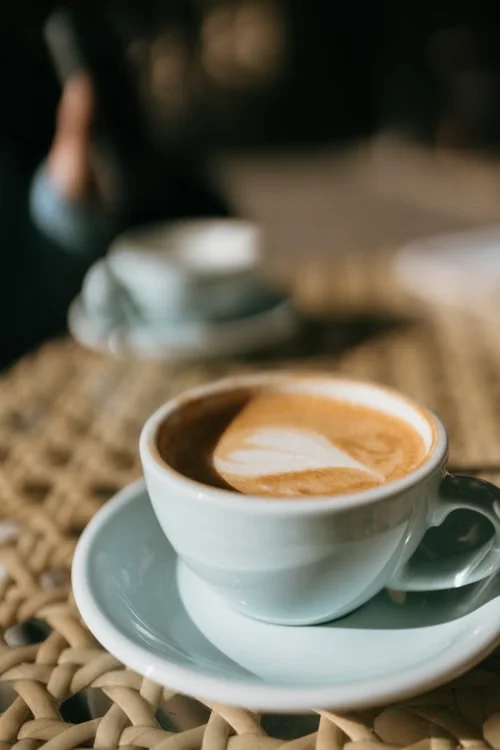

( Escenes · 3D )
Objectes que es transformen
amb el scroll
Un gra de cafè que es converteix en raig, la tassa que s'omple i el latte art que apareix. Tot és 3D real i el controles amb el scroll. Així convertim les fotos d'un producte en objectes que el client pot veure moure's.
El cafè, del gra a la tassa

El gra Un objecte en 3D que gira i brilla com un gra de veritat.
La transformació El gra s'enlaira i el raig omple la tassa, tot enllaçat amb el teu scroll.
El resultat La càmera baixa i descobreix el latte art, fet amb una foto real.
- TorratMitjà
- OrigenEtiòpia
- MoldreEspresso
- SaborCacau i caramel
( I ara què? )